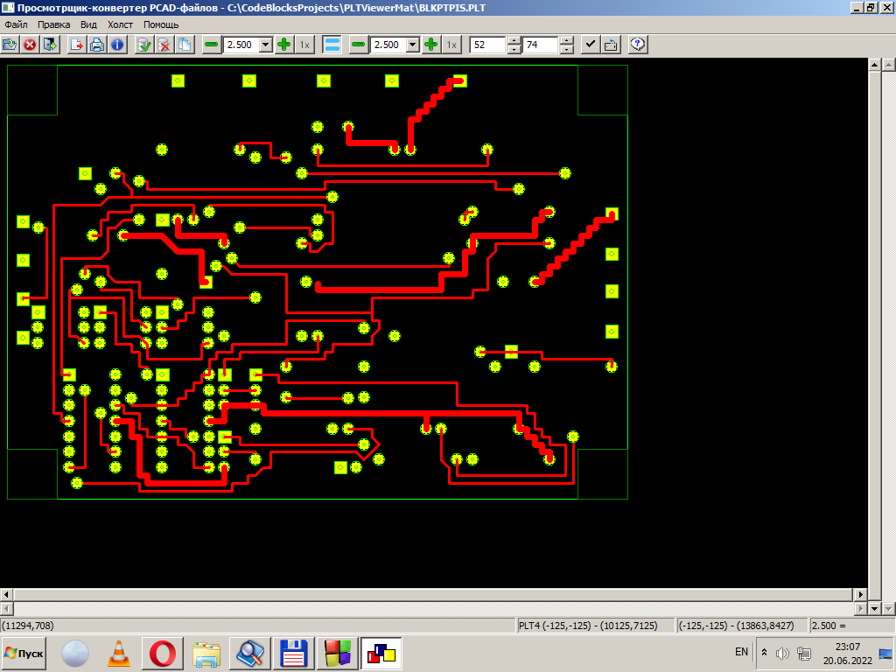

На рисунке выше приведён вид главного окна программы. Перечислим с краткими пояснениями имеющиеся на нём
органы управления программой.
-
Под заголовком окна - главное меню программы. С его структурой и доступными функциями можно ознакомиться
здесь.
Ниже главного меню расположен инструментарий - полоса инструментов быстрого доступа.

Среди них имеются:
- Кнопка загрузки (открытия) произвольного поддерживаемого PCAD-файла.
- Кнопка закрытия ранее открытого файла.
- Кнопка завершения работы программы.
- Кнопка выполнения экспорта текущего рисунка в графический файл какого-либо из поддерживаемых форматов.
- Кнопка распечатки изображения на печатающем устройстве.
- Кнопка получения информации о текущем открытом файле.
- Кнопка отметки примитивов изображения.
- Кнопка обращения (инверсии) состояния отмеченности примитивов.
- Кнопка снятия отметок с элементов изображения.
- Кнопка копирования подмножества примитивов в буфер обмена операционной системы.
Далее расположен блок органов управления масштабом по оси абсцисс (X), состоящий из:
- Кнопки уменьшения масштаба на ступень.
- Поля индикации и прямого указания масштаба. Масштаб можно ввести либо непосредственно в поле в
виде произвольного числа, либо выбрать одну из стандартных ступеней масштаба из выпадающего списка.
- Кнопки увеличения масштаба на ступень.
- Кнопки установки единичного масштаба по оси X.
-
Далее располагается кнопка-переключатель режима равных масштабов по осям. Кнопка нажата (включена) - масштаб
по обоим осям координат принудительно выравнивается, кнопка отжата (выключена) - масштабы по осям могут различаться.
Следующим по порядку размещается блок органов управления масштабом по оси ординат (Y), имеющий такой же состав, как
и описанный выше аналогичный блок для оси абсцисс (X):
- Кнопки уменьшения масштаба на ступень.
- Поля индикации и прямого указания масштаба. Масштаб можно ввести либо непосредственно в поле в
виде произвольного числа, либо выбрать одну из стандартных ступеней масштаба из выпадающего списка.
- Кнопки увеличения масштаба на ступень.
- Кнопки установки единичного масштаба по оси Y.
Ниже располагается блок управления состоянием холста. Он состоит из двух "вертунов",
позволяющих устанавливать размеры холста по горизонтали и вертикали, а также двух кнопок-переключателей с фиксацией,
одна из которых включает/выключает активность холста, а вторая выбирает его ориентацию - портретную или ландшафтную.
- Вертун установки горизонтального размера холста.
- Вертун установки вертикального размера холста.
- Кнопка с фиксацией включения/выключения активности холста.
- Кнопка с фиксацией выбора ориентации холста.
Указание размера холста выполняется только целыми числами в одной из двух возможных единиц длины - миллиметрах или
сотых дюйма. Выбор используемой единицы осуществляется посредством диалога точной
настройки параметров холста (вызывается посредством пункта меню "Холст/Установка размера".). Размер может быть
введён прямо в поле ввода или установлен кнопками вертуна. Кнопки блока представляют собой двоичные переключатели с
фиксацией. Нажатое положение кнопки 23 включает холста (делает его активным), при отпущенном положении данной кнопки
холст выключается. Кнопка 24 в нажатом состоянии ориентирует холст ландшафтно (больший размер холста будет размещён
горизонтально), а в отпущенном состоянии - портретно (больший размер будет размещаться вертикально).
- Наконец, последняя кнопка инструментария - вызов данной системы помощи по работе с программой.
Под инструментарием располагается главное окно программы - окно просмотра загруженного изображения 25. Оно окружено
четырьмя полосами прокрутки - двумя вертикальными (26, 27) и двумя горизонтальными (28, 29).
Внутренние полосы прокрутки перемещают окно просмотра относительно полной поверхности изображения, выбирая, тем самым,
его просматриваемый участок. Внешние полосы прокрутки устанавливают положение холста на
поверхности изображения.
Наконец, под окном просмотра расположен последний информационный элемент - полоса статуса 30. Она содержит в себе
четыре раздела.
- Раздел описания текущего положения курсора.
- Раздел характеристики загруженного изображения.
- Раздел описания положения окна просмотра.
- Раздел текущих масштабов.
В первом разделе выводится текущее положение курсора мыши. Также, если курсор указывает на какой-либо примитив
рисунка, то в том же разделе отображается краткая информация об этом элементе - его тип и некоторые параметры.
В этом поле также будут размещаться подсказки, содержащие информацию о назначении отдельных органов инструментария
программы и пунктов её системы меню. Подсказки появляются при наведении на них курсора мыши.
Во втором разделе помещается краткая характеристика открытого изображения - сигнатура типа файла и координаты его
крайних точек - левой верхней и правой нижней. Эти величины можно также рассматривать как координаты соответствующих
точек прямоугольника, описанного вокруг рисунка.
В третьем разделе находятся координаты текущего окна просмотра (также левый верхний и правый нижний углы). Они указывают
положение участка рисунка, в данный момент находящегося в области просмотра. Все координаты отображаются в тех единицах
измерения, которые установлены путём настройки параметров программы.
Наконец, последний, четвёртый, раздел содержит информацию о текущем масштабе изображения. Если масштабы по осям
различаются, то они выводятся через двоеточие в виде двух дробных чисел: первое указывает масштаб по оси X, а второе -
по оси Y. Если же включён режим равных масштабов, то в поле выводится одно дробное число, указывающее этот единственный
масштаб сразу для двух осей, за которым следует символ равенства ('=').